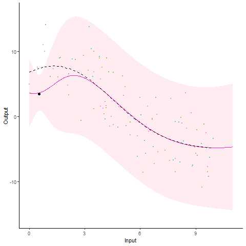
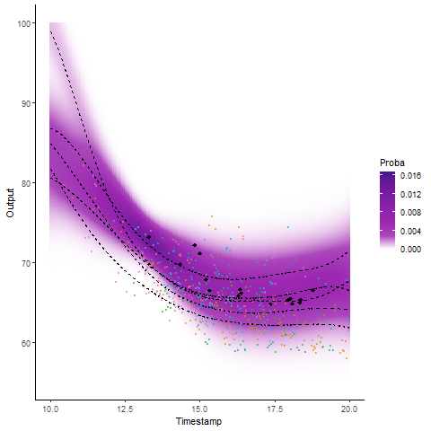
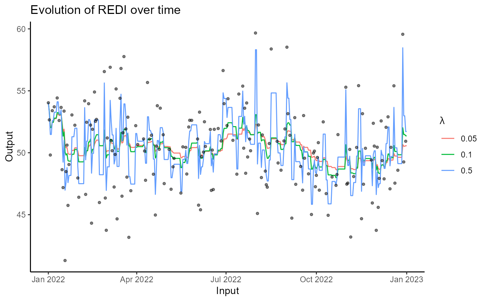
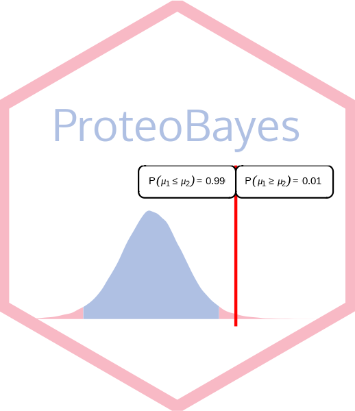
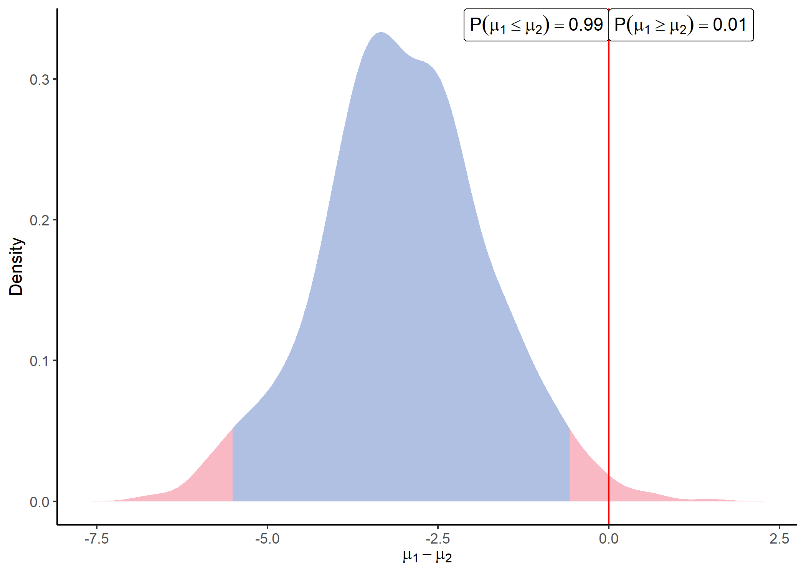

TD Probabilités - STID 1A
TD1 - TD2 - TD2 correction - TD3 - TD3 correction - TD4 - TD4 correction - TD5 - TD6
Statistics and Machine Learning
Research Associate at
The University of Manchester
In April 2022, I joined the Department of Computer Science at The University of Manchester as a Research Associate in Mauricio Álvarez's group.
I also worked on my current project at The University of Sheffield between September 2021 and April 2022.
Prior to these positions, I have been an ATER (Teaching and Research Assistant) and a PhD student at MAP5 - Université de Paris.
I completed my PhD under the supervision of Servane Gey (MAP5), Pierre Latouche (MAP5) and
Benjamin Guedj (Inria - UCL).
My current interests in statistics and machine learning involve:
• Latent Variable Multi-output Gaussian Processes for Hierarchical Datasets
C. Ma, A. Leroy, M. Alvarez - Preprint - 2023
• A Bayesian Framework for Multivariate Differential Analysis accounting for Missing Data
M. Chion, A. Leroy - Preprint - 2023
• Cluster-Specific Predictions with Multi-Task Gaussian Processes
A. Leroy, P. Latouche, B. Guedj, S. Gey - Journal of Machine Learning Research - 2023
• MAGMA: Inference and Prediction using Multi-Task Gaussian Processes with Common Mean
A. Leroy, P. Latouche, B. Guedj, S. Gey - Machine Learning - 2022
• International Swimming League: Do Successive Events Lead to Improve Swimming Performance?
R. Pla, A. Leroy, Yannis Raineteau, Philippe Hellard - IJSPP - 2021
• Multi-task learning models for functional data and application to sports performances prediction
A. Leroy - PhD Thesis - 2020
• Bayesian approach to quantify morphological impact on performance in international elite freestyle swimming
R. Pla, A. Leroy, R. Massal, M. Bellami, F. Kaillani, P. Hellard, J-F. Toussaint, A. Sedeaud - BMJ SEM - 2019
• Robust Exponential Decreasing Index (REDI): adaptive and robust method for computing cumulated workload
I. Moussa, A. Leroy, G. Sauliere, J. Schipman, J-F Toussaint, A. Sedeaud - BMJ SEM - 2019
• Functional Data Analysis in Sport Science: Example of Swimmers’ Progression Curves Clustering
A. Leroy, A. Marc, O. Dupas, J. L. Rey, S. Gey - Applied Sciences - 2018
• Statistics Meets Sports: What We Can Learn from Sports Data
Editors: Yves Dominicy and Christophe Ley - 2023
R package MagmaClustR


 R package REDI --- Web app
R package REDI --- Web app

 R package ProteoBayes --- Web app

• University of North Carolina at Chapel Hill Biostatistics - 12/07/2023
Multi-Mean Gaussian Processes: A novel probabilistic framework for multi-correlated functional data
• PreMeDICaL seminars - 10/07/2023
Multi-Mean Gaussian Processes: A novel probabilistic framework for multi-correlated functional data
• ICML 2023 - 25/07/2023 - [Poster]
Cluster-Specific Predictions with Multi-Task Gaussian Processes
• MODAL seminars - 11/04/2023
Multi-Mean Gaussian Processes: A novel probabilistic framework for multi-correlated longitudinal data
• S-Training seminar - 24/02/2023
Do sports problems require tailored methods or direct applications? On a swimming-oriented journey with a Bayesian roadmap.
•Sport, Data Science & Applications - INSEP - Paris - 15/12/2022 - [Web app]
Dessiner l'information sans feuille ni crayon : quelques visualisations pour données issues du sport
• NeurIPS Workshop on Gaussian Processes, Spatiotemporal Modeling, and Decision-making Systems - 02/12/2022 - [Poster]
Multi-Means Gaussian Processes: A novel probabilistic framework for multi-correlated longitudinal data
• Machine Learning Retreat - Sheffield - 01/07/2022
Multi-Mean Gaussian Processes: A novel probabilistic framework for multi-correlated longitudinal data
• ADSAI 2022 - Manchester - 20/06/2022
Multi-Mean Gaussian Processes: A novel probabilistic framework for multi-correlated longitudinal data
• CMStatistics 2021 - London - 18/12/2021
Multi-task Gaussian processes models for functional data and application to the prediction of swimming performances
• 52èmes Journées de Statistiques - Nice - 07-06-2021
Mélange de processus gaussiens multi-tâches et prédictions cluster-spécifiques
• Maths et Sport - Mathématiques en mouvement - 19/05/2021
IA et sport : Prédiction de la performance future en natation
• Séminaire de Probabilités et Statistique - IMAG - 19-04-2021
Multi-task learning models for functional data and application to the prediction of sports performances
• Conférence DUT info - 09/03/2021
IA et sport : prédire les performances futures en natation avec des algorithmes
• Workshop du LaPsyDe - 22/01/2021
Mixed models
• Soutenance de thèse - 09/12/2020 - Replay defense - Replay defense + questions
Soutenance de thèse - PhD thesis defense
• Le corps statistique - La Gaîté Lyrique - 26/11/2020
Quand la statistique et le sport font équipe
• Groupe de travail en Statistique du LMRS - Rouen - 22-10-2020
Apprentissage de données fonctionnelles par modèles multi-tâches: Application à la prédiction de performances sportives
• MAP5 PhD students' working group (GTE) - 24-04-2020
Apprentissage multitâche de données fonctionnelles
• MathSport International Conference in Athens - 01-07-2019
Talent detection in sport: Machine Learning methods for performance prediction
• 51èmes Journées de Statistique - 06-06-2019
Apprentissage et données fonctionnelles: Application au problème de la détection dans le sport de haut niveau
• Soutenance de mi-thèse - 24-05-2019
• 2ème Séminaire Statistique et Sport - 02-05-2019
Magnitude Based Inferences: controverses et alternatives
• 8èmes Rencontres Jeunes Statisticiens - 01-04-2019
Apprentissage et données fonctionnelles: Application au problème de la détection dans le sport de haut niveau
• Symposium de l'IRMES - 12-09-2018
Clustering de courbe de progression en natation
• 50èmes Journées de Statistique - 29-05-2018
Clustering de courbes : Application au problème de la détection en natation
• Symposium de l'IRMES - 23-09-2017
Analyse de la Performance en Pentathlon Moderne
• Journée de valorisation de la recherche, INSEP - 22-03-2017
Analyse de la Performance en Pentathlon Moderne
I have been teaching the following courses at IUT de Paris, Rives de Seine:
TD1 - TD2 - TD2 correction - TD3 - TD3 correction - TD4 - TD4 correction - TD5 - TD6
TP1 - TP1 correction - TP2 - TP2 correction - TP3 - TP3 correction
Cours - TD - Corrections TD
• Research projet creation
• Statistical tools and data analysis : doc
Alexia Grenouillat, INSA Toulouse - 2022 (M1 internship) - Report
Hugo Lelièvre, INSA Toulouse - 2022 (M1 internship) - Report
Pierre Pathé, Université Paris 1 - 2021 (M2 internship)
Léonard Gousset, IUT de Paris, Rives de Seine - 2021 (STID intership) - Report - Web App
James Haziza, IUT de Paris, Rives de Seine - 2021 (STID intership) - Web App
Maxime Bellami, Ensai - 2018 (M1 internship)
Romain Massal , Ensai - 2017 (M1 internship) - Report